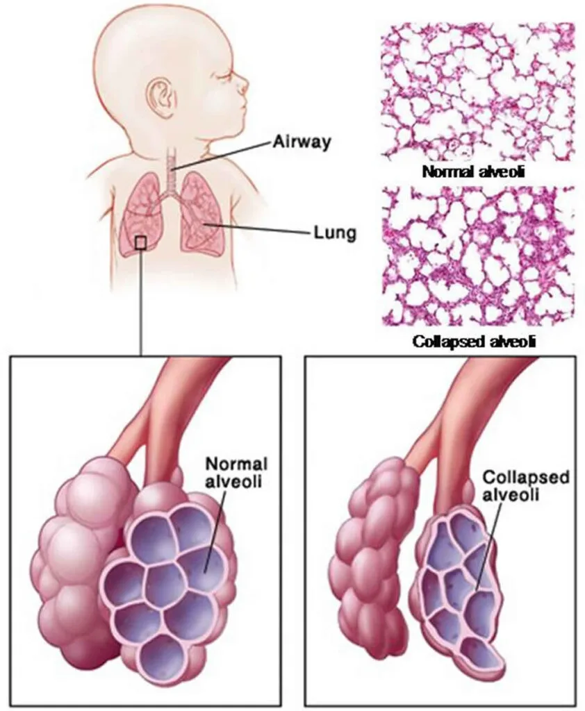
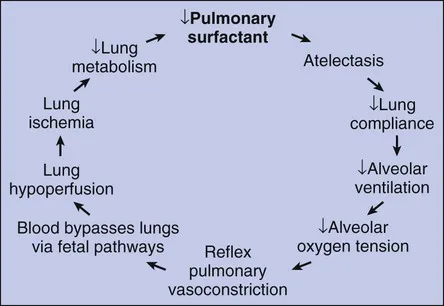
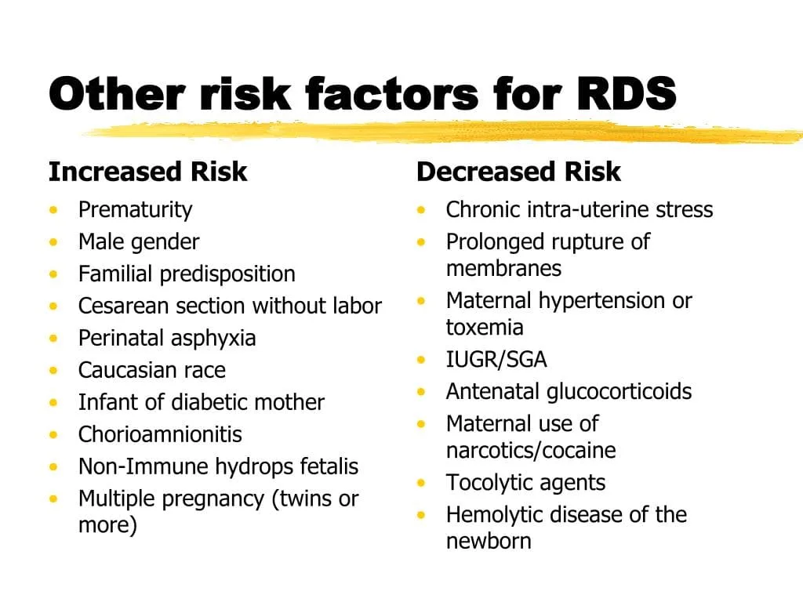
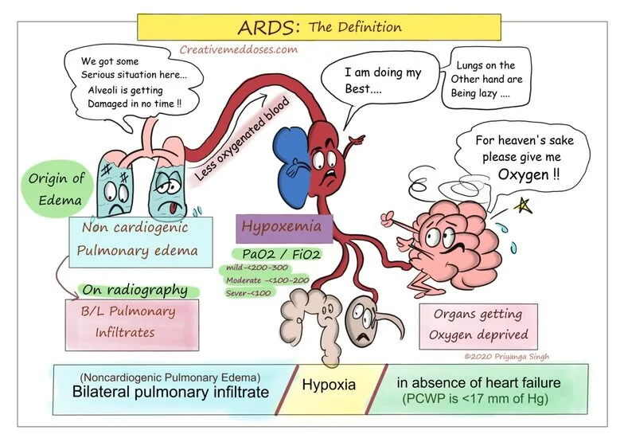
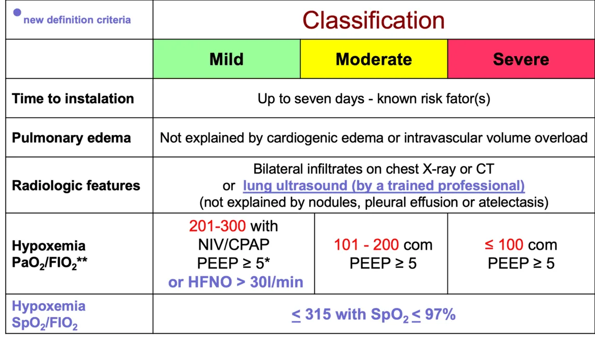
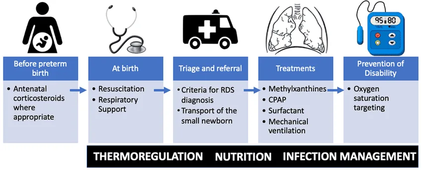

Expanded Nursing Uganda Explanation
Respiratory distress syndrome should be understood beyond a short definition. Link the concept to patient history, focused assessment, common risks, nursing priorities, documentation and evaluation of outcomes.
01 Overview
Respiratory Distress Syndrome (RDS), also known as Hyaline Membrane Disease (HMD), is a common and often severe lung disorder primarily affecting premature newborns. It is characterized by progressive respiratory failure that develops shortly after birth, typically within the first few hours of life.
The hallmark of RDS is a deficiency in pulmonary surfactant and structural immaturity of the lungs, leading to widespread atelectasis (collapse of the alveoli) and impaired gas exchange.
The problem in RDS revolves around two main factors: surfactant deficiency and structural immaturity of the lungs .
- What is Surfactant? Pulmonary surfactant is a complex mixture of lipids (about 90%) and proteins (about 10%) produced by specialized cells in the lungs called Type II pneumocytes (also known as Type II alveolar cells).
- The primary lipid component is dipalmitoylphosphatidylcholine (DPPC) , which is crucial for its function.
- Surfactant production typically begins around 24-28 weeks of gestation but does not reach sufficient levels to prevent RDS until approximately 34-36 weeks of gestation .
- Function of Surfactant: Reduces Surface Tension: The most critical function of surfactant is to lower the surface tension at the air-liquid interface within the alveoli.
- Prevents Alveolar Collapse (Atelectasis): Without adequate surfactant, the high surface tension causes the small, fragile alveoli to collapse at the end of expiration. This requires a much greater effort to re-open them with each subsequent breath.
- Maintains Functional Residual Capacity (FRC): Surfactant helps keep the alveoli partially open even after exhalation, maintaining a volume of air in the lungs that allows for continuous gas exchange.
- Promotes Alveolar Stability: It ensures uniform inflation of alveoli of different sizes, preventing smaller alveoli from collapsing into larger ones.
- How Surfactant Deficiency Leads to Impaired Gas Exchange: Increased Work of Breathing: With deficient surfactant, the infant must exert tremendous effort (high negative intrathoracic pressure) to open collapsed alveoli with each breath. This leads to respiratory muscle fatigue and distress.
- Widespread Atelectasis: Many alveoli remain collapsed, reducing the functional lung volume available for gas exchange.
- Ventilation-Perfusion (V/Q) Mismatch: Blood continues to flow past collapsed or poorly ventilated alveoli. This creates a V/Q mismatch, where blood is shunted through the lungs without picking up oxygen, leading to hypoxemia (low blood oxygen).
- Carbon Dioxide Retention: Inadequate ventilation also leads to impaired removal of carbon dioxide, resulting in hypercapnia (high blood carbon dioxide).
- Acidosis: The combination of hypoxemia and hypercapnia, coupled with increased metabolic demands due to the work of breathing, leads to metabolic and respiratory acidosis .
- Pulmonary Vasoconstriction: Hypoxemia and acidosis cause pulmonary vasoconstriction, increasing pulmonary vascular resistance. This can lead to persistent fetal circulation (right-to-left shunting) through the foramen ovale and patent ductus arteriosus, further exacerbating hypoxemia.
- Alveolar Damage and Hyaline Membrane Formation: The repeated collapse and re-expansion of alveoli, combined with pulmonary edema and inflammation, can damage the alveolar lining cells. Plasma proteins and necrotic cellular debris leak into the alveoli, forming a fibrin-rich exudate known as hyaline membranes . These membranes further impede gas exchange, hence the alternative name "Hyaline Membrane Disease."
- Immature Alveoli: In premature infants, the lungs are not fully developed. The saccules (precursors to alveoli) are fewer in number, larger, and have thicker walls than mature alveoli. This reduces the surface area available for gas exchange.
- Immature Capillary Bed: The pulmonary capillary network surrounding the alveoli may also be underdeveloped, hindering efficient oxygen and carbon dioxide transfer across the alveolar-capillary membrane.
- Fragile Lung Tissue: Premature lung tissue is more fragile and susceptible to injury from mechanical ventilation or inflammation.
While RDS is primarily a disease of prematurity due to insufficient surfactant production, certain factors can either increase the likelihood of its development or worsen its severity.
- Prematurity: This is by far the most significant risk factor. The earlier an infant is born, the greater the risk of developing RDS and the more severe the disease tends to be.: As discussed, Type II pneumocytes begin producing surfactant around 24-28 weeks, but adequate amounts are typically not present until 34-36 weeks. Infants born before this time have insufficient mature surfactant. Risk Profile: < 28 weeks gestation: Almost all infants will develop RDS.
- 28-32 weeks gestation: High risk, but incidence decreases with increasing gestational age.
- 32-36 weeks gestation: Moderate risk, incidence continues to decrease.
- 37 weeks gestation: RDS is rare, but can occur in specific circumstances (see below).
These are conditions in the mother that can either predispose the fetus to premature birth or directly affect fetal lung maturity.
- Maternal Diabetes (Poorly Controlled): High maternal glucose levels can lead to elevated fetal insulin levels (hyperinsulinemia). Insulin is an antagonist to cortisol and can delay lung maturation and surfactant production in the fetus.: Increases the risk and severity of RDS, even in late preterm or term infants of diabetic mothers.
- Absence of Antenatal Corticosteroids: Antenatal corticosteroids (e.g., betamethasone, dexamethasone) given to the mother before preterm birth accelerate fetal lung maturity and surfactant production.: Not receiving these steroids significantly increases the risk of RDS in preterm infants.
- Maternal Hypertension/Preeclampsia: Chronic stress to the fetus can sometimes accelerate lung maturation, paradoxically reducing the risk of RDS for a given gestational age, as these conditions often lead to intrauterine growth restriction (IUGR).
- Prolonged Rupture of Membranes (PROM) (>18-24 hours): Similar to maternal hypertension, prolonged stress to the fetus can sometimes accelerate lung maturation, reducing the risk of RDS. However, PROM also carries a risk of infection, which can worsen lung disease.
These are factors related to the baby's health or the circumstances of delivery that can influence lung maturity or function.
- Birth Asphyxia/Perinatal Asphyxia: Lack of oxygen and blood flow around the time of birth can impair surfactant production and release, and also inactivate existing surfactant.: Increases the risk and severity of RDS, even in infants who might otherwise have mature lungs.
- Multiple Gestation (Twins, Triplets, etc.): Often associated with premature birth. Also, if there is twin-to-twin transfusion syndrome, the larger twin may be at higher risk due to hyperinsulinemia.
- Male Sex: For reasons not fully understood, male infants have a slightly higher risk of RDS at a given gestational age compared to female infants.
- Caucasian Race: Similarly, Caucasian infants appear to have a slightly higher incidence of RDS. The exact physiological basis for this is unclear.
- Cesarean Section Without Labor: Infants delivered by elective C-section without prior labor may have a higher risk of transient tachypnea of the newborn (TTN) and potentially a slightly increased risk of RDS compared to vaginal births or C-sections after labor has begun. This is thought to be due to the lack of physiological stress and catecholamine surge associated with labor, which aids in lung fluid clearance and surfactant release.
- Previous Infant with RDS: There may be a genetic predisposition or shared maternal factors that contribute to recurrence.
- Hydrops Fetalis: Severe edema and fluid accumulation in the fetus, including the lungs, can impair lung development and surfactant function.
- Cold Stress/Hypothermia: Can increase metabolic demand and oxygen consumption, exacerbating respiratory distress.
RDS presents within the first few hours of life, often immediately after birth, with a progressive worsening of respiratory effort. The signs are those of generalized respiratory distress.
- Tachypnea: Abnormally rapid breathing rate (typically > 60 breaths per minute in a newborn). This is often the earliest sign as the infant attempts to compensate for poor gas exchange. Mechanism: Increased respiratory drive to improve ventilation and oxygenation.
- Expiratory Grunting: A short, low-pitched sound heard during expiration. Mechanism: The infant attempts to maintain lung volume (functional residual capacity) by exhaling against a partially closed glottis. This creates back-pressure that prevents complete alveolar collapse. It's an auto-PEEP (Positive End-Expiratory Pressure) mechanism.
- Nasal Flaring: Widening of the nostrils during inspiration. Mechanism: Increases the diameter of the nasal passages, thereby reducing airway resistance and making it easier to inhale air.
- Retractions (Indrawing): Visible pulling in of the skin and soft tissues of the chest wall during inspiration. These can be: Subcostal: Below the ribs.
- Intercostal: Between the ribs.
- Substernal: Below the sternum.
- Suprasternal/Supraclavicular: Above the sternum or collarbones (indicating more severe distress).
- Mechanism: Due to increased negative intrathoracic pressure generated during forceful inspiration as the infant struggles to inflate stiff, non-compliant lungs.
- Cyanosis: Bluish discoloration of the skin, mucous membranes, and nail beds. Can be central (affecting lips, tongue, trunk) or peripheral (affecting hands and feet, which is less indicative of severe hypoxia). Mechanism: Insufficient oxygenation of arterial blood (hypoxemia), leading to a higher concentration of deoxygenated hemoglobin. Requires significant hypoxemia to be clinically apparent. Often masked by supplemental oxygen.
- Decreased Breath Sounds: Due to poor air entry into atelectatic lung areas.
- Pallor: Pale skin, often indicating poor perfusion, anemia, or hypothermia.
- Hypotonia/Lethargy: As distress worsens and hypoxemia/acidosis become severe.
- Apnea: Cessation of breathing, a sign of severe respiratory fatigue or central nervous system depression.
The diagnosis of RDS is a clinical one, supported by specific investigations.
As described above: onset of characteristic signs of respiratory distress (tachypnea, grunting, flaring, retractions) typically within the first few hours of life in a premature infant. The distress usually worsens over the first 48-72 hours if untreated.
- Classic Appearance: Reticulogranular (Ground Glass) Pattern: Fine, diffuse granular opacities throughout both lung fields. This represents widespread micro-atelectasis (collapsed alveoli) and diffuse alveolar edema.
- Air Bronchograms: Lucent (darker, air-filled) branching structures (bronchi) visible against the opaque (whiter, fluid-filled or collapsed) lung parenchyma. This indicates that the larger airways are open while the surrounding alveoli are filled with fluid or collapsed.
- Decreased Lung Volumes: Small, under-inflated lung fields, indicating poor expansion.
- Progression: As the disease worsens, the opacities may become more confluent, leading to a "white out" appearance in severe cases.
- Hypoxemia: Decreased PaO2 (partial pressure of oxygen in arterial blood), often requiring supplemental oxygen to maintain adequate saturation.
- Hypercapnia: Increased PaCO2 (partial pressure of carbon dioxide in arterial blood), indicating inadequate ventilation.
- Respiratory Acidosis: Low pH due to elevated PaCO2.
- Metabolic Acidosis: Low pH and low bicarbonate, which can develop due to hypoxemia and increased metabolic demands.
It's important to differentiate RDS from other causes of neonatal respiratory distress, as management differs. These include:
- Transient Tachypnea of the Newborn (TTN): Often seen in term or late-preterm infants, especially after C-section. Characterized by tachypnea, mild distress, and fluid in the fissures on CXR, usually resolving within 24-48 hours.
- Neonatal Pneumonia/Sepsis: Can mimic RDS clinically and radiologically. May require blood cultures and antibiotic treatment.
- Meconium Aspiration Syndrome (MAS): Occurs when infants aspirate meconium-stained amniotic fluid. CXR shows patchy infiltrates, hyperexpansion.
- Persistent Pulmonary Hypertension of the Newborn (PPHN): Can occur secondary to other lung conditions or independently.
- Congenital Heart Disease: Certain cardiac lesions can cause respiratory distress.
- Congenital Lung Anomalies: E.g., diaphragmatic hernia, congenital cystic adenomatoid malformation (CCAM).
The management of RDS is multi-faceted, focusing on preventing the condition, providing adequate respiratory support, replacing deficient surfactant, and managing potential complications. It encompasses both prenatal and postnatal interventions.
These interventions are aimed at preventing or reducing the severity of RDS before birth.
- Antenatal Corticosteroids (Glucocorticoids): These are the single most effective intervention for preventing RDS. They cross the placenta and stimulate fetal lung maturation, accelerating the production and release of endogenous surfactant by Type II pneumocytes. They also induce structural lung development. Recommendation: Administer to pregnant women at risk of preterm delivery between 24 and 34 weeks of gestation (some guidelines extend this to 36+6 weeks in specific circumstances).
- Example Dose: Dexamethasone (often 6mg IM every 12 hours for 4 doses) or Betamethasone (12mg IM every 24 hours for 2 doses).
- Significantly reduces the incidence and severity of RDS, intraventricular hemorrhage (IVH), and neonatal mortality.
- Early Antenatal Care: Allows for early identification and management of risk factors for preterm birth, and ensures appropriate timing for antenatal corticosteroid administration.
- Healthy Diet Rich in Vitamins: General good maternal health supports healthy fetal development.
- Avoid Smoking and Alcohol During Pregnancy: These substances are teratogenic and can negatively impact fetal growth and development, including lung maturation, and increase the risk of preterm birth.
Optimizing the delivery room environment and initial care is crucial for infants at risk of RDS.
- Expert Attendance at Delivery: A neonatologist or pediatric team experienced in the resuscitation and care of premature infants should attend deliveries of fetuses born at less than 32-34 weeks’ gestation (your note for < 28 weeks is definitely appropriate for high-risk). Ensures immediate, skilled intervention, including optimal thermal management, gentle ventilation, and early initiation of respiratory support if needed.
- Thermal Management (Keep the Child Warm): Premature infants are highly susceptible to hypothermia due to large surface area to body weight ratio, thin skin, and lack of subcutaneous fat. Cold stress increases oxygen consumption, depletes glucose stores, and exacerbates metabolic acidosis, all of which worsen respiratory distress and can impair surfactant function. Interventions: Pre-warmed radiant warmer, plastic wraps/bags, thermal mattresses, warm blankets, warm humidified gases.
- Gentle Resuscitation: Avoid aggressive positive pressure ventilation (PPV) that can cause volutrauma or barotrauma to fragile, immature lungs. Use appropriate pressures and PEEP.
These are the direct treatment strategies once RDS is diagnosed or highly suspected.
- Continuous Positive Airway Pressure (CPAP): Provides continuous distending pressure to the airways and alveoli, helping to keep them open (preventing atelectasis), improve functional residual capacity (FRC), and stabilize the chest wall. It also helps to distribute surfactant more effectively.
- Endotracheal Intubation and Mechanical Ventilation: Indication: Reserved for infants who fail CPAP (e.g., persistent hypoxemia, hypercapnia, increasing work of breathing, recurrent apnea) or require surfactant administration.
- Mechanism: Delivers breaths with specific pressures, volumes, and respiratory rates. Modern ventilation strategies focus on "gentle ventilation" using low tidal volumes, appropriate PEEP, and permissive hypercapnia to minimize lung injury.
- High-Frequency Oscillatory Ventilation (HFOV): Indication: An advanced mode of ventilation for severe RDS or when conventional ventilation is inadequate, it uses very small tidal volumes at very high frequencies.
- Mechanism: Aims to provide gas exchange while minimizing lung distension and injury.
- Preparations (e.g., Survanta, Curosurf, Infasurf, Beractant, Poractant alfa): Mechanism: Exogenous surfactant preparations are instilled directly into the infant's trachea. They immediately supplement the deficient endogenous surfactant, reducing alveolar surface tension, preventing alveolar collapse, and improving lung compliance and gas exchange.
- Administration: Given via an endotracheal tube. Techniques like LISA (Less Invasive Surfactant Administration) or MIST (Minimally Invasive Surfactant Therapy) using a thin catheter can be employed to deliver surfactant while the infant remains on CPAP, avoiding intubation if possible.
- Timing: Most effective when given early in the course of RDS, ideally within the first few hours of life (prophylactic or early rescue). Repeat doses may be required.
- Intravenous Fluids (IV Fluids): Examples: (N/S, D5%; (Neonatalyte i.e. D50%= 70mls, D5% = 310 & R/L=120ML). Crystalloid solutions like Normal Saline (N/S) or Ringer's Lactate (R/L) might be used for volume expansion if needed for hypotension.
- Mechanism: Maintain hydration, provide essential glucose to prevent hypoglycemia (which is common in stressed premature infants and can worsen brain injury), and correct electrolyte imbalances.
- Temperature Control: (Already covered under initial resuscitation, but continuous monitoring is key).
- Antibiotics: Mechanism: Given empirically to rule out or treat early-onset sepsis, which can mimic RDS or coexist with it. A course of antibiotics is typically started until culture results are available and infection is ruled out.
- Example: Ampicillin + Gentamicin or Cefotaxime.
- Nutritional Support (NG tube feeding): Mechanism: Infants with RDS have increased metabolic demands and cannot feed orally due to respiratory distress. Enteral feeding (initially trophic feeds via nasogastric tube) is crucial for gut health and eventually growth, once stable. Parenteral nutrition may be needed if enteral feeds are not tolerated.
- Vitamin K (0.5-1mg IM): Mechanism: Standard prophylactic administration at birth for all newborns to prevent Vitamin K deficiency bleeding. Particularly important in premature infants due to increased risk of intraventricular hemorrhage (IVH) if coagulopathy is present.
- Sedation/Analgesia: Mechanism: May be required for intubated and ventilated infants to reduce agitation, improve ventilator synchrony, and minimize oxygen consumption.
- Continuous Cardiorespiratory Monitoring: Heart rate, respiratory rate, oxygen saturation (SpO2 via pulse oximetry), blood pressure, ECG monitoring. Reasoning: Essential to assess the infant's response to therapy, detect deterioration, and identify complications.
- Blood Gas Analysis: Frequent arterial or capillary blood gases (ABG/CBG) to monitor pH, PaO2, PaCO2, and bicarbonate.: Guides adjustments in respiratory support and helps manage acid-base balance.
- Blood Glucose Monitoring: Frequent checks: To detect and manage hypoglycemia or hyperglycemia.
- Temperature Monitoring: (Continuous).
- Conscious Level Monitoring: To assess for signs of neurological compromise (e.g., IVH, seizures, effects of hypoxemia/acidosis) and response to pain or sedation.
- Fluid Balance: Strict input/output monitoring, daily weights.: To prevent overhydration or dehydration.
- Radiological Monitoring: Repeat chest X-rays.: To assess lung response to therapy, confirm ETT position, and detect complications (e.g., pneumothorax).
Providing clear, empathetic, and regular updates to parents is vital for their emotional well-being and helps them cope with the stress of having a premature infant with a serious illness.
Despite significant advances in neonatal care, infants with RDS remain at risk for various complications, both in the short-term (acute) and long-term.
These complications arise during the immediate course of RDS treatment.
- Air Leak Syndromes (Pulmonary Air Leaks): Occur when air escapes from the lungs into surrounding tissues. Types: Pneumothorax: Air in the pleural space (between lung and chest wall), compressing the lung. Can be spontaneous or due to positive pressure ventilation.
- Pneumomediastinum: Air in the mediastinum (center of the chest).
- Pneumopericardium: Air in the pericardial sac (around the heart), a life-threatening emergency.
- Pulmonary Interstitial Emphysema (PIE): Air trapped within the lung tissue itself, often a precursor to other air leaks.
- Risk Factors: Mechanical ventilation, high ventilator pressures, fragile immature lungs.
- Clinical Signs: Sudden worsening of respiratory distress, asymmetry of chest movement, decreased breath sounds, hypotension.
- Intraventricular Hemorrhage (IVH): Bleeding into the brain's ventricular system, where cerebrospinal fluid is produced and circulates. Risk Factors: Extreme prematurity (especially <32 weeks), rapid changes in cerebral blood flow (e.g., fluctuations in blood pressure, aggressive fluid administration), birth asphyxia, acidosis, pneumothorax.
- Patent Ductus Arteriosus (PDA): The ductus arteriosus (a fetal blood vessel connecting the aorta and pulmonary artery) fails to close after birth, leading to left-to-right shunting of blood. Risk Factors: Prematurity, hypoxemia, fluid overload.
- Consequences: Can lead to increased pulmonary blood flow, pulmonary edema, worsening lung compliance, and heart failure. Can also steal blood flow from other organs.
- Clinical Signs: Bounding pulses, heart murmur, active precordium, increased ventilator support requirements.
- Necrotizing Enterocolitis (NEC): A serious gastrointestinal disease characterized by inflammation and necrosis of the bowel, primarily affecting premature infants. Risk Factors: Extreme prematurity, perinatal asphyxia, formula feeding, often associated with systemic illness.
- Consequences: Can lead to bowel perforation, peritonitis, sepsis, and need for surgery.
- Sepsis: Systemic infection. Risk Factors: Prematurity, immature immune system, invasive procedures (e.g., intubation, central lines), prolonged hospitalization.
- Consequences: Can worsen respiratory distress, lead to multi-organ failure, and increase mortality.
- Retinopathy of Prematurity (ROP): Abnormal blood vessel growth in the retina, potentially leading to retinal detachment and blindness. Risk Factors: Extreme prematurity, high or fluctuating oxygen levels, prolonged oxygen therapy.
- Screening: All premature infants are screened for ROP, especially those born before 30 weeks or weighing <1500g.
- Bronchopulmonary Dysplasia (BPD) / Chronic Lung Disease (CLD): A chronic lung condition affecting premature infants who required prolonged respiratory support. Defined by oxygen requirement at 28 days or 36 weeks postmenstrual age. Mechanism: Multifactorial, involves lung injury from mechanical ventilation and oxygen toxicity, inflammation, and arrested lung development.
- Consequences: Persistent respiratory symptoms, increased susceptibility to respiratory infections, prolonged oxygen dependence, rehospitalizations.
- Neurodevelopmental Impairment: A spectrum of challenges including cerebral palsy, developmental delay (motor, cognitive, speech), learning disabilities, and behavioral problems. Risk Factors: Extreme prematurity, severe IVH, periventricular leukomalacia (PVL), prolonged hypoxemia/ischemia, severe sepsis.
- Prognosis: More common with decreasing gestational age and increasing severity of acute complications.
- Chronic Respiratory Morbidity: Infants with BPD/CLD may have ongoing respiratory problems such as recurrent wheezing, asthma-like symptoms, increased susceptibility to respiratory infections (especially RSV), and reduced exercise tolerance. Prognosis: While many improve over time, some may have lifelong lung function abnormalities.
- Growth Impairment: Preterm infants, especially those with severe RDS and complications, may experience growth faltering. Risk Factors: High metabolic demands, feeding difficulties, prolonged hospitalization.
- Hearing Impairment: Extreme prematurity, prolonged exposure to loud NICU environment, certain ototoxic medications. All NICU graduates undergo hearing screening.
The prognosis is generally good for most infants who survive the acute phase, but it varies significantly based on gestational age, severity of RDS, and the presence of complications.
- Survival Rate: Survival rates for infants with RDS are very high, particularly for those born after 28-30 weeks' gestation. Even extremely premature infants (23-24 weeks) have significantly improved survival.
- Gestational Age: The single most important factor influencing prognosis. The more premature the infant, the higher the risk of severe RDS, complications, and long-term sequelae.
- Severity of RDS: Milder forms of RDS are associated with fewer complications and better outcomes.
- Presence of Complications: The development of major complications (e.g., severe IVH, severe BPD) significantly worsens the long-term neurodevelopmental and respiratory prognosis.
- Long-Term Outcome: Most infants who survive RDS, particularly those without severe complications, will have normal or near-normal neurodevelopmental outcomes.
- A significant proportion, especially the most premature, will require ongoing medical follow-up for potential developmental, respiratory, or other health issues.
Nursing care for an infant with RDS is complex, requiring vigilant assessment, skilled interventions, and continuous monitoring to optimize respiratory function, minimize complications, and support the infant's overall well-being and development.
- Related To: Alveolar-capillary membrane changes (due to surfactant deficiency), altered oxygen supply (hypoventilation, atelectasis), altered blood flow (PDA), altered oxygen-carrying capacity of blood.
- As Evidenced By: Tachypnea, grunting, nasal flaring, retractions, cyanosis, hypoxemia (low SpO2, low PaO2), hypercapnia (high PaCO2), respiratory acidosis.
- Specific Nursing Interventions Detail/Rationale
- 1. Maintain Patent Airway and Optimize Respiratory Function Positioning: Place infant in neutral head position or slightly elevated head of bed to optimize airway and lung expansion. Avoid neck hyperextension or flexion. Suctioning: Perform gentle nasopharyngeal and endotracheal suctioning as needed (based on assessment of secretions, visible mucus, or adventitious breath sounds) to remove secretions and maintain airway patency, using appropriate suction pressures and duration to minimize hypoxia and vagal stimulation. Ventilator Management: Collaborate with medical team to ensure optimal ventilator settings (CPAP, mechanical ventilation) based on blood gas results and clinical status. Monitor ventilator alarms closely.
- 2. Administer and Monitor Respiratory Therapies Oxygen Administration: Administer warmed, humidified oxygen as prescribed, titrating flow/FiO2 to maintain target SpO2 levels (e.g., 90-95% as per unit protocol), avoiding both hypoxemia and hyperoxia. Surfactant Administration: Assist physician with surfactant administration via ETT. Ensure proper positioning during and after administration to facilitate even distribution. Monitor for adverse reactions (e.g., bradycardia, oxygen desaturation, reflux, ETT obstruction). Inhaled Nitric Oxide (iNO): If ordered, administer and monitor iNO therapy as prescribed, which can be used to improve oxygenation and treat pulmonary hypertension.
- 3. Continuous Monitoring and Assessment Respiratory Assessment: Perform frequent and thorough respiratory assessments (q1-2h or more frequently as needed), noting rate, rhythm, depth, work of breathing (grunting, flaring, retractions), and auscultating breath sounds (presence, equality, adventitious sounds). Pulse Oximetry: Continuously monitor SpO2 and set appropriate alarm limits. Cardiac Monitoring: Continuously monitor heart rate and rhythm; note any changes that may indicate hypoxemia or stress. Blood Gases: Anticipate, assist with, and interpret arterial or capillary blood gas results. Report abnormal values immediately.
- 4. Promote Energy Conservation Clustering Care: Group nursing activities together to allow for undisturbed rest periods, minimizing energy expenditure and oxygen demand. Minimize Stressors: Provide a quiet, dimly lit environment to reduce sensory stimulation. Handle infant gently.
- Related To: Neuromuscular immaturity, decreased lung compliance, metabolic acidosis, fatigue of respiratory muscles.
- As Evidenced By: Tachypnea, apnea, shallow respirations, nasal flaring, retractions, grunting, desaturations.
- Specific Nursing Interventions Detail/Rationale
- 1. Monitor and Document Breathing Pattern Observe and document respiratory rate, depth, and rhythm. Note any apneic episodes (duration, associated bradycardia/desaturation) and required interventions (e.g., stimulation, bag-mask ventilation).
- 2. Provide Respiratory Support as Needed Positioning: Optimize positioning to facilitate breathing. Stimulation: Gently stimulate infants experiencing mild apnea to initiate breathing. Bag-Mask Ventilation: Be prepared to provide manual ventilation with bag-mask device if apnea is prolonged or associated with significant bradycardia/desaturation.
- 3. Manage Medications Caffeine Citrate: Administer caffeine citrate as prescribed, which is commonly used to stimulate respiratory drive and reduce apnea in preterm infants. Monitor for side effects (e.g., tachycardia, irritability).
- 4. Minimize Environmental Stimuli Create a calm and quiet environment to reduce stress and prevent overstimulation that can worsen apneic episodes.
- Related To: Immaturity of renal system, insensible water losses (through immature skin, radiant warmer), third spacing of fluid, increased metabolic rate, medication effects.
- Specific Nursing Interventions Detail/Rationale
- 1. Accurate Fluid Intake and Output Strict I&O: Maintain strict intake and output records (urine output, IV fluids, enteral feeds, medication volumes). Daily Weights: Weigh infant daily at the same time, using the same scale, to monitor fluid status trends.
- 2. Monitor Hydration Status Assess for signs of dehydration (e.g., poor skin turgor, sunken fontanelle, dry mucous membranes) or fluid overload (e.g., edema, crackles in lungs, increased weight).
- 3. Administer IV Fluids and Medications Administer prescribed IV fluids and medications (e.g., diuretics if fluid overload) precisely, using infusion pumps. Monitor for signs of PDA, as fluid overload can exacerbate it.
- 4. Maintain Thermal Neutrality Minimize insensible water losses by maintaining the infant's temperature within the neutral thermal range, using incubators, radiant warmers, and humidification.
- Related To: Immature thermoregulation, large surface area to mass ratio, thin skin, decreased subcutaneous fat, impaired metabolic response.
- As Evidenced By: Unstable body temperature, cool/flushed skin, increased oxygen consumption.
- Specific Nursing Interventions Detail/Rationale
- 1. Maintain Neutral Thermal Environment Incubator/Radiant Warmer: Use appropriate thermal support (servo-controlled incubator or radiant warmer) to maintain core body temperature (e.g., 36.5-37.5°C axillary/rectal). Minimize Exposure: Minimize infant's exposure during procedures. Warm Materials: Use warmed blankets, linen, and humidified gases.
- 2. Monitor Temperature Continuously monitor skin and/or core temperature. Report persistent instability.
- 3. Recognize and Address Causes Identify and correct causes of temperature instability (e.g., infection, cold stress, equipment malfunction).
- Related To: Immature immune system, invasive procedures (ETT, IVs), prolonged hospitalization, broken skin integrity.
- As Evidenced By: Potential signs of sepsis (temperature instability, poor feeding, lethargy, increased respiratory distress, abnormal lab values).
- Specific Nursing Interventions Detail/Rationale
- 1. Strict Aseptic Technique Adhere strictly to aseptic technique for all invasive procedures (IV insertion, suctioning, ETT care).
- 2. Hand Hygiene Perform meticulous hand hygiene before and after all patient contact.
- 3. Environmental Cleanliness Maintain a clean patient environment.
- 4. Monitor for Signs of Infection Assess for subtle signs of sepsis (e.g., temperature instability, changes in feeding, lethargy, increased apnea, worsening respiratory status). Monitor white blood cell count and C-reactive protein levels.
- 5. Administer Antibiotics Administer prescribed antibiotics as scheduled and monitor for efficacy and side effects.
- Related To: Environmental overstimulation, pain/discomfort, sleep-wake cycle disruption, prolonged hospitalization.
- As Evidenced By: Irritability, crying, yawning, hiccuping, gaze aversion, poor feeding tolerance, sleep disruption.
- Specific Nursing Interventions Detail/Rationale
- 1. Provide Developmentally Supportive Care Minimize Stimulation: Reduce noise, dim lights, and cover incubator during rest periods. Clustering Care: Group nursing activities to allow for undisturbed rest. Containment/Swaddling: Provide appropriate boundaries and containment during care and rest using blanket rolls or swaddling to promote a sense of security. Non-Nutritive Sucking: Offer a pacifier during stressful procedures or at feeding times to provide comfort.
- 2. Pain Assessment and Management Use validated neonatal pain scales (e.g., NIPS, PIPP) to assess pain. Administer analgesics/sedatives as prescribed and non-pharmacological comfort measures (e.g., sucrose solution, gentle touch).
- Related To: Situational crisis (preterm birth, infant illness), fear, anxiety, lack of knowledge, separation from infant.
- As Evidenced By: Expressions of fear/anxiety, questions about prognosis, withdrawal from infant, difficulty participating in care.
- Specific Nursing Interventions Detail/Rationale
- 1. Provide Emotional Support and Reassurance Listen actively to parents' concerns and fears. Provide honest, yet hopeful, information in an understandable manner.
- 2. Facilitate Parental Involvement Encourage parental visitation, touch, and participation in simple care activities (e.g., diaper changes, temperature taking, reading to infant) as appropriate. Promote skin-to-skin contact (Kangaroo Care) when infant is stable enough, as it has numerous benefits for both infant and parent.
- 3. Education Educate parents about RDS, its treatment, the infant's condition, equipment, and prognosis. Answer questions patiently.
- 4. Referrals Refer to social work, pastoral care, or support groups as needed.
- 5. Reassurance Reassure the mother about her role and bond with the infant.
02 Nursing Uganda Clinical Lens
Use Respiratory distress syndrome as a practical nursing topic, not only a memorized definition. Prioritize airway, breathing, circulation, pain, asepsis, wound healing and early complication detection.
- What to understand first: define respiratory distress syndrome, identify the normal or expected pattern, then explain what changes when the patient is unwell.
- Why it matters in care: the nurse must recognize risk early, explain findings clearly, document accurately and know when to escalate.
- How to revise it: connect each point to assessment, nursing diagnosis or care problem, intervention, rationale and evaluation.
03 Assessment Guide
- Vital signs, pain, bleeding, perfusion, level of consciousness and injury pattern.
- Wound appearance, drainage, odour, swelling, temperature and surrounding skin.
- Fluid balance, mobility, nutrition, surgical site risk and ordered investigations.
04 Nursing Priorities, Rationales and Outcomes
- Stabilize urgent problems first, then prepare for investigations or theatre care.
- Maintain aseptic technique, pain control, wound care and documentation.
- Prevent shock, infection, pressure injury, deep vein thrombosis and delayed healing.
The rationale for these priorities is patient safety: nursing actions should prevent deterioration, reduce discomfort, support recovery and create clear evidence for the next caregiver.
- Expected outcome: The patient remains stable, wound healing progresses, pain is controlled and complications are recognized early.
05 Patient Teaching and Revision Check
- Explain respiratory distress syndrome in simple language the patient or caregiver can repeat back.
- Teach warning signs, medicine or follow-up instructions, hygiene or lifestyle points where relevant.
- For exams, prepare a short answer using: definition, causes or risk factors, signs, assessment, management, complications and prevention.
- For ward practice, document baseline findings, actions taken, patient response and the plan for review.
Illustrations and Diagrams (17)








9 more diagrams available — open the lesson for full illustrations.
Related Video Lectures
Watch nursing lecture videos on YouTube for this topic. Opens in a new tab.
Watch on YouTubeExternal link: YouTube may use its own cookies and terms. Nursing Uganda is not affiliated with YouTube.